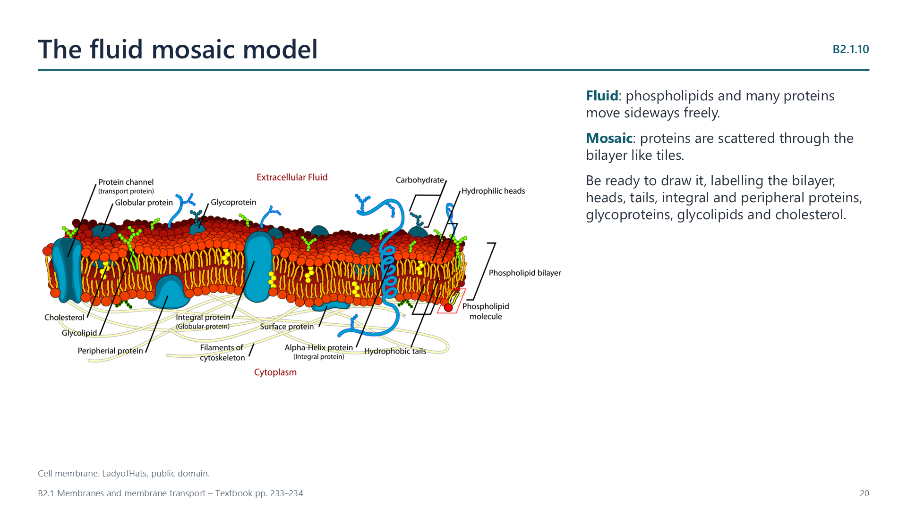
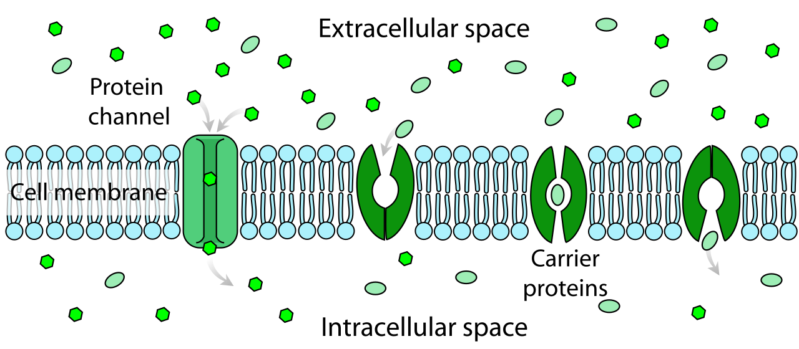
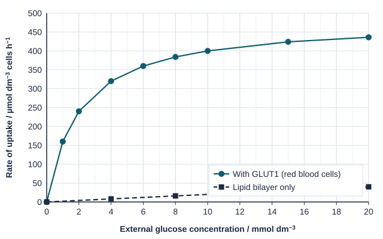

Written for this site from the class slides, with textbook page references for each statement. The chapter is on pages 223–236 of the course textbook. Image credits are on slide 25.
A phospholipid has a hydrophilic phosphate head and two hydrophobic hydrocarbon tails, so it is amphipathic. In water, the heads face the water and the tails face one another. This forms a continuous double layer, the basis of every cell membrane.
B2.1.2
The bilayer acts as a barrier
p. 224
The hydrophobic core has low permeability to large molecules and hydrophilic particles, including ions and polar molecules. The membrane therefore separates two watery solutions.
Passive movement
B2.1.3
Simple diffusion
pp. 225–226
Diffusion is the net movement of particles from higher to lower concentration, and it uses no ATP. Oxygen and carbon dioxide are small and non-polar, so they pass between the phospholipids.
B2.1.4
Integral and peripheral proteins
pp. 226–227
Integral proteins are embedded in one or both lipid layers, and the parts inside the core are hydrophobic. Peripheral proteins are attached to one surface. Membrane proteins vary widely in their structure and role, and more active membranes contain more of them.
B2.1.5
Osmosis and aquaporins
pp. 227–229
Osmosis is the net movement of water across a membrane, from a lower to a higher solute concentration. Water molecules move at random, and the membrane does not let the solute cross. Aquaporins are channel proteins that greatly speed up water movement while blocking ions.
Watch out: describe direction using solute concentration. Water moves, and the solute does not.
B2.1.6
Channel proteins and facilitated diffusion
p. 229
A channel has a hydrophilic pore, and its size and charge decide which particles pass. Many channels open and close. Movement is passive and goes down the concentration gradient.
Active movement and selectivity
B2.1.7
Pump proteins and active transport
pp. 230–231
Pumps use energy from ATP to move specific particles against a concentration gradient. ATP makes the protein change shape, and pumps usually work in one direction.
Route
ATP?
Protein
Direction
Simple diffusion
No
None
Down gradient
Facilitated diffusion
No
Channel
Down gradient
Active transport
Yes
Pump
Against gradient
B2.1.8
What makes a membrane selective
p. 232
Facilitated diffusion and active transport are selective, because each protein handles particular particles. Simple diffusion is not selective, since it depends only on size and on hydrophobic or hydrophilic properties.
The whole membrane
B2.1.9
Glycoproteins and glycolipids
p. 234
These have a carbohydrate attached to a protein or a lipid, and the carbohydrate is always on the extracellular side. They help with cell adhesion and cell recognition.
B2.1.10
The fluid mosaic model
pp. 234–236

Molecules move sideways within the membrane, which makes it fluid, and proteins are scattered among the lipids like a mosaic. A drawing should show phospholipids with hydrophilic and hydrophobic regions, integral and peripheral proteins, glycoproteins and cholesterol.
Videos
Select a video to play it here. Select it again to close it.
Print this guide and complete it as you work through the slides and videos. It asks for your own explanations, so close the notes while you try each section.
A printable worksheet covering all ten statements, from quick recall to data questions and a longer answer. It has 40 marks and takes about 40 minutes, or you can do one section at a time.
Questions built on realistic experimental data, in the style of Paper 1B and Paper 2. Work them on paper and show your working. 7 marks in total. Your teacher has the mark scheme.
Glucose entry into red blood cells
7 marks

Photo: LadyofHats Mariana Ruiz Villarreal, Public domain, Wikimedia Commons.
Red blood cells take up glucose through GLUT1 carrier proteins in the plasma membrane. The rate of glucose uptake was measured at different external glucose concentrations, in normal cells and in artificial lipid vesicles that have no carrier proteins.

State the rate of uptake through GLUT1 at an external glucose concentration of 4 mmol dm−3. [1]
Compare the uptake of glucose with and without carrier proteins. [2]
Explain why the rate of uptake through GLUT1 levels off. [2]
Calculate how many times faster uptake is with GLUT1 than through the bilayer alone at 10 mmol dm−3. [1]
Suggest why glucose crosses the lipid bilayer so slowly. [1]
Practical
Selective movement through dialysis tubing
Lab40 minB2.1.3, B2.1.8
You will need: Dialysis tubing, starch solution, glucose solution, beaker, iodine solution, glucose test strips
Fill knotted tubing with a mix of starch and glucose, then rinse the outside
Stand it in a beaker of water for 15 minutes
Test the water for glucose and for starch
Explain the results using molecule size and membrane permeability
Safety: Eye protection when using iodine. Wipe up spills.
Carry this out with your teacher's supervision and follow your school's lab rules.
Nature of science and TOK
Nature of science
Falsification
The Davson-Danielli protein sandwich model was replaced by the Singer-Nicolson fluid mosaic model in 1972, as new evidence contradicted the older one.
Theory of knowledge
If models get replaced, in what sense are they knowledge?
A model can be useful and later be shown to be wrong. Consider whether today's fluid mosaic model is true, or simply the best available.
Think deeper
Predict first, then check. Each one opens on the Think deeper pages.